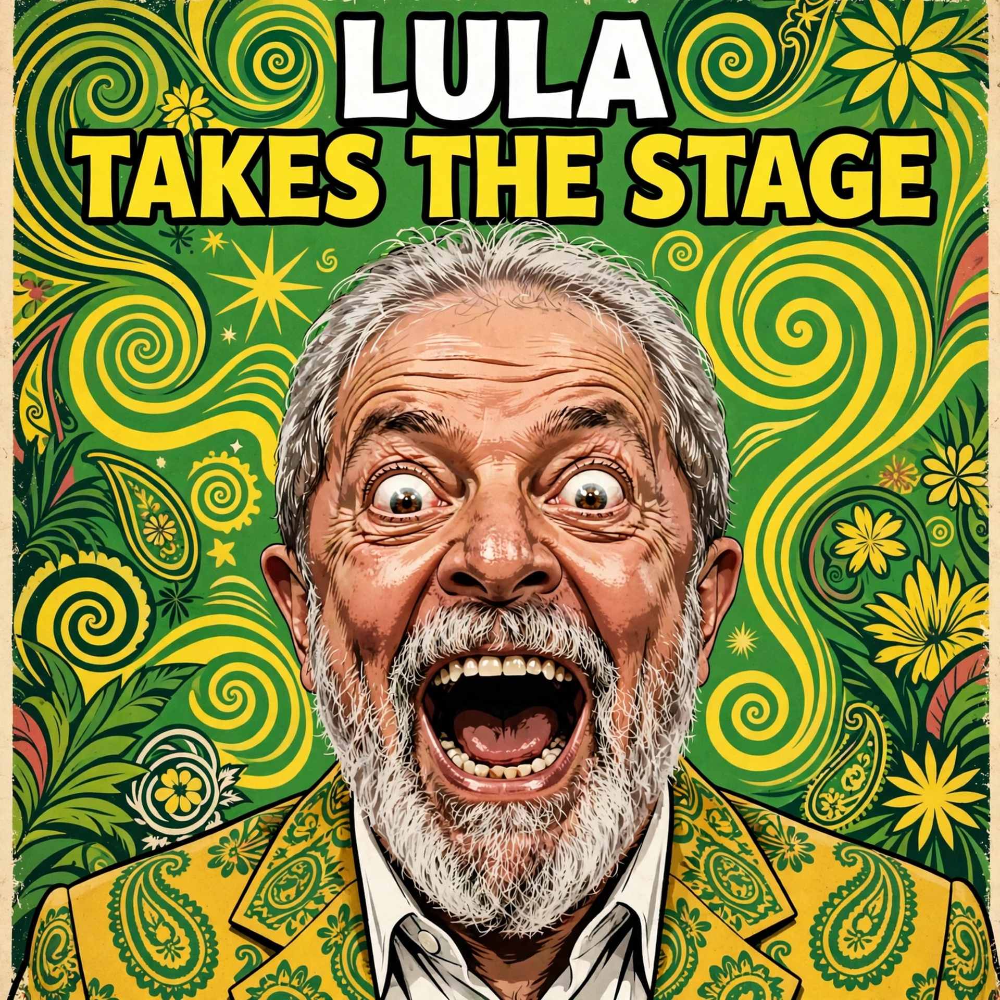

Top Stories — Wednesday, Nov 11, 2026

October US CPI rose 0.4% month over month, above the 0.3% forecast, and core CPI rose 0.3% for a third straight month against 0.2% expected. The hot print revived bets on a Federal Reserve rate hike in December — Governor Christopher Waller had already said a 0.3% core reading could justify a 50-basis-point move. Bitcoin slid to about $72,700 overnight, its lowest since August 20, and was trading near $73,600 on Wednesday morning, with US spot ETFs recording about $201 million in outflows on November 9, a third straight day of redemptions.
Read the full story →
The US House of Representatives voted 211-204 on Tuesday to send eight articles of impeachment against Defense Secretary Pete Hegseth to the Judiciary Committee, effectively halting the effort for this Congress. The articles, introduced by Republican Representative Thomas Massie of Kentucky — the only Republican to vote against the referral — accused Hegseth of waging war against Iran without congressional approval, ordering extrajudicial killings, and ignoring laws meant to protect civilians. Democrats take control of Congress in January, so the impeachment fight is likely to return.
Read the full story →
World leaders take the stage at COP31 in Antalya, Türkiye, on Wednesday for the high-level segment of the UN climate summit, including Turkish President Recep Tayyip Erdogan, Brazilian President Luiz Inacio Lula da Silva, and Iran's Masoud Pezeshkian. Some big names are missing: French President Emmanuel Macron, German Chancellor Friedrich Merz, and Italian Prime Minister Giorgia Meloni are skipping the event, US President Donald Trump is not attending, and Chinese President Xi Jinping is represented by Vice President Han Zheng. Host Türkiye is championing a push to raise electricity's share of global energy consumption to 35 percent by 2035.
Read the full story →
Miranda Lambert has announced Songline, a nine-track live album arriving November 13, 2026, followed by a concert film on November 20 through Amazon Music. The project captures her October 1 performance at The Truth in Nashville, where she was joined by her longtime band and a 12-piece orchestra. The setlist features familiar favorites including Bluebird, Kerosene, Tin Man, and Gunpowder & Lead, alongside newer material from her album Crisco, and fans can already hear a live version of Snakeskin Boots on Amazon Music.
Read the full story →
OpenAI launched Businesses in ChatGPT in beta on Tuesday, November 10, letting companies claim and verify a free profile, see how often ChatGPT mentions them, and add product feeds with prices and availability. Eligible US ecommerce and online-service businesses can also publish a Business Agent that chats with shoppers on their behalf inside ChatGPT. OpenAI says ChatGPT reaches 1.2 billion people each week; the agents are free for now, though businesses can sponsor an agent and use it as the destination for ChatGPT ads.
Read the full story →